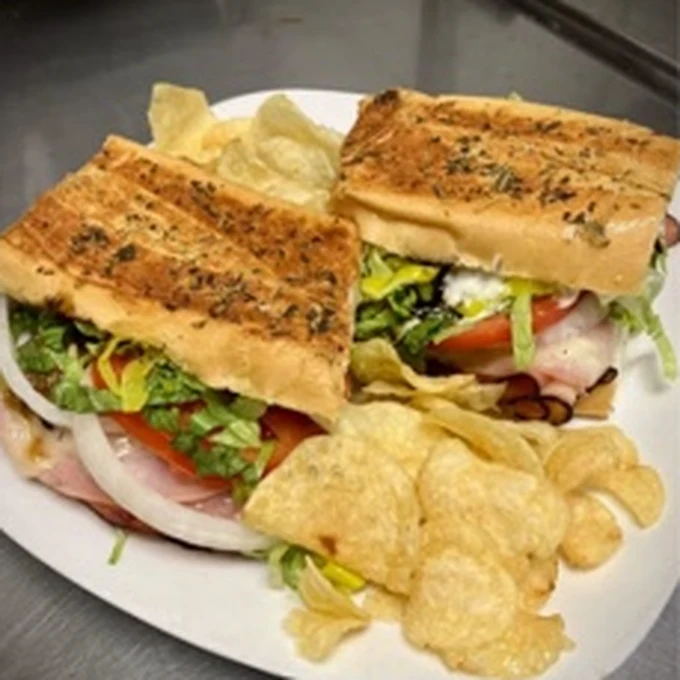
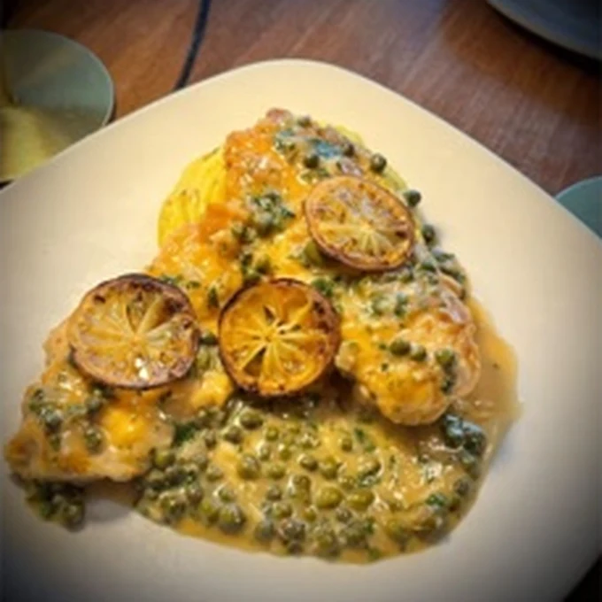
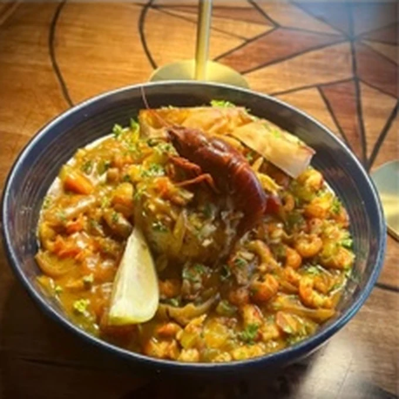
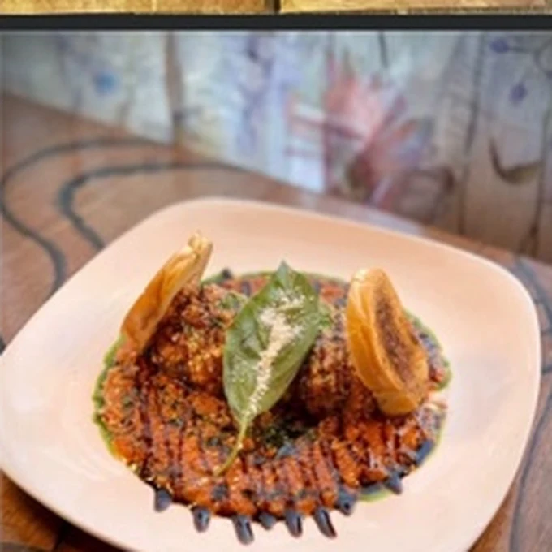

FROM THE PHOTO GALLERYRustic Sandwiches
Featured in the restaurant's photo gallery. Exact name, ingredients and price to be confirmed.
Rustic French–Italian cooking, made with creativity, care, and a whole lot of love.

Inspired by the flavors of the French–Italian border, BIGG's brings together the warmth of a neighborhood eatery and the joy of a memorable meal.
Expect rustic cooking, thoughtful touches, and plates made to be shared and savored.
A glimpse inside“Rustic French–Italian food straight from the border of France & Italy, made with creativity & love.”
— BIGG'S FACEBOOK DESCRIPTIONA few moments from the BIGG's Facebook photo gallery.


Demo photography cropped from screenshots supplied for this preview. Obtain permission and original high-resolution images before commercial launch.
Find us in Washington, North Carolina. We'd love to hear from you.